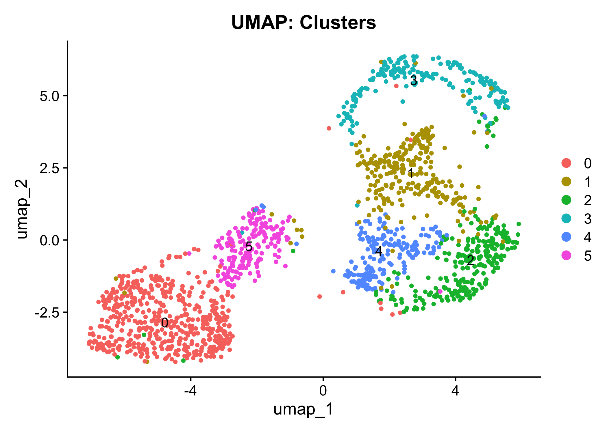
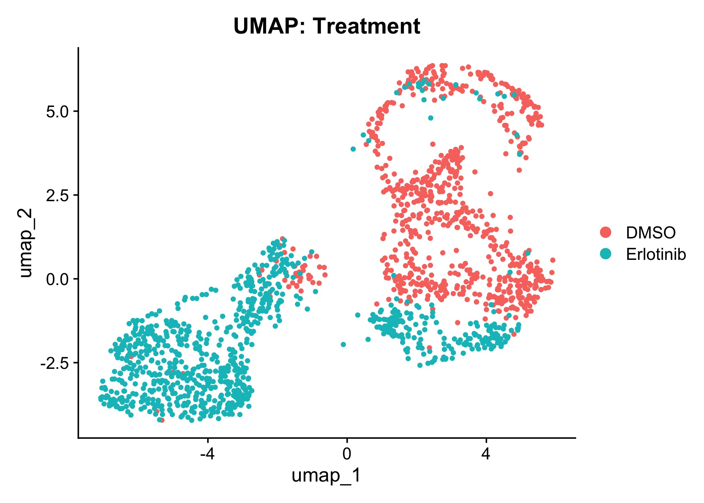

Step 5 Report: Leiden Clustering and Marker Genes
UMAP Plots


Marker Genes per Cluster
Marker genes for cluster 0
Marker genes for cluster 1
Marker genes for cluster 2
Marker genes for cluster 3
Marker genes for cluster 4
Marker genes for cluster 5
Summary
Top 10 marker genes summary (CSV)